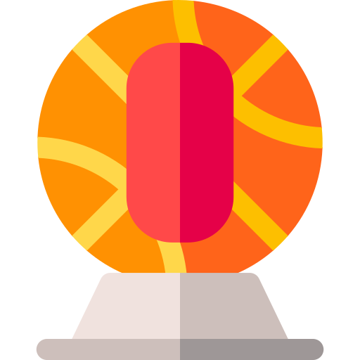
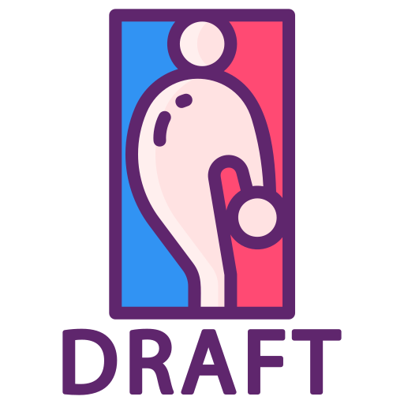

Que es el Baloncesto?
15/11/2021
El baloncesto, también conocido como básquetbol, basquetbol o simplemente básquet, es un deporte de equipo, jugado entre dos conjuntos de cinco jugadores cada uno durante cuatro períodos o cuartos de diez minutos cada uno, doce minutos cada cuarto en la NBA. El objetivo del equipo es anotar puntos introduciendo un balón por la canasta, un aro a 3,05 metros sobre la superficie de la pista de juego del que cuelga una red. La puntuación por cada canasta o cesta es de dos o tres puntos, dependiendo de la posición desde la que se efectúa el tiro a canasta, o de uno, si se trata de un tiro libre por una falta de un jugador contrario. El equipo ganador es el que obtiene el mayor número de puntos. El contacto con la pelota se realiza con las manos. Los jugadores, también llamados baloncestistas, no pueden trasladarse de un lado a otro sujetando la pelota, sino botándola contra el suelo. El equipo en posesión del balón o atacante, intenta anotar puntos mediante tiros, entradas a canasta o mates, mientras que el equipo defensor busca impedirlo robando la pelota o efectuando tapones. Cuando un tiro hacia la canasta fracasa, los jugadores de ambos equipos intentan atrapar el rebote.
Top temas relevantes con el Articulo
- Basketball
- Deporte Competitivo
- Deporte
- Nacional Basketball Association
- BAA
- Chicago Stags
- 2021
- Philadelphia Warriors
- Pittsbugh Ironman
- Maple Leaf Garden
Top paginas relevantes con la NBA y el Baloncesto
Citas
como se creo la nba
20/05/22
sus inicios
Con el final de la Segunda Guerra Mundial en 1945, el pueblo estadounidense fue volviendo poco a poco a poner su atención en los eventos deportivos, especialmente para utilizarlos como un divertimento, luego de años repletos de dolor y terror. El béisbol, el fútbol americano y en menor medida el hóckey sobre hielo, se llevaban la mayor cantidad de miradas, mientras que el baloncesto, relativamente nuevo para la época, apenas tenía apego a nivel universitario y en algunas competencias diseminadas y regionales.
Con su capacidad para 15 mil personas, el Garden era el hogar de los Boston Bruins de la NHL desde 1928. Pero fuera de la temporada de hóckey o en los días en los que los Bruins no se presentaban de local, el gigantesco recinto quedaba inutilizado. Esto despertó en el empresario una idea: buscar otro espectáculo que pudiera ocupar el Garden durante esos días y de esa forma, darle un mayor aprovechamiento a su tamaño y costo de mantenimiento. Y dentro de los pocos deportes bajo techo convocantes, el elegido fue obviamente el baloncesto.
Para fortuna de Brown, rápidamente aparecieron otros dirigentes que compartían su problemática: Ned Irish con el Madison Square Garden de New York, Al Sutphin con el Cleveland Arena, John Harris con el Duquesne Gardens de Pittsburgh, Pat Tyrell con el Philadelphia Arena y Frank Selke con el Maple Leaf Gardens de Toronto, entre otros. En total fueron 11 propietarios de estadios de hóckey, quienes se reunieron con un objetivo en común: crear la Basketall Association of America (BAA).
senana 9
20/05/22
problemas al iniciar la nba
La siguiente meta fue encontrar a un comisionado para dirigir la flamante competencia y para eso, los socios fundadores recurrieron a un viejo conocido: Maurice Podoloff, comisionado de la American Hockey League. Podoloff fue reticente en un principio, al reconocer que no tenía demasiados conocimientos ligados al baloncesto. Pero eventualmente fue convencido con un argumento muy claro: los propietarios no buscaban tener al frente de la liga a un fanático, sino a un buen administrador. Algo que Podoloff ya había demostrado ser./p>
semana 10
22/05/22
soluciones
Alarmado por la situación y muy rápido para las negociaciones, Podoloff tomó el único camino iluminado por una luz de esperanza: tratar de captar a las estrellas de su competidor. Y para eso, atacó el punto débil de la competencia del medio-oeste: la falta de estadios y ciudades importantes, aspecto donde la BAA marcaba tendencia. Básicamente, lo que uno tenía, el otro lo quería. Y así tras algunos días de reuniones, cuatro franquicias dieron el salto desde la NBL: los Rochester Royals, los Fort Wayne Pistons, los Indianapolis Kautskys y la más importante, los Minneapolis Lakers con Mikan a la cabeza.
La fusión generó una verdadera resurrección para la BAA. Con figuras reconocidas y estadios inmensos en las principales ciudades norteamericanas, la liga estaba destinada al éxito. Y el mismo no tardó en llegar: en 1949 el resto de los equipos de la NBL terminaron de pasarse a la nueva reina de las ligas de baloncesto estadounidenses, dejándola conformada ahora con 17 franquicias a lo largo y ancho del país. Para enmarcar la absorción y festejar el comienzo de una nueva era, se optó por un cambio de nombre: National Basketball Association. NBA. Y a partir de ahí, el resto ya es historia.
El primer problema que tuvo que enfrentar la liga fue, por supuesto, el bajo nivel de concurrencia. Si bien en parte esto se explicaba con el poco arraigo de las nuevas franquicias en sus respectivas ciudades, el principal inconveniente tenía nombre y apellido: George Mikan. El egresado de la Universidad de De Paul fue la primera gran superestrella del mundo del baloncesto y era en si mismo una atracción. Su primer paso en el profesionalismo lo dio en la temporada 1946-47, jugando para los Chicago American Gears de la National Basketball League (NBL), una competencia centratada en el medio-oeste, para luego pasar en la 1947-48 a los Minneapolis Lakers.
Rafa Lopez